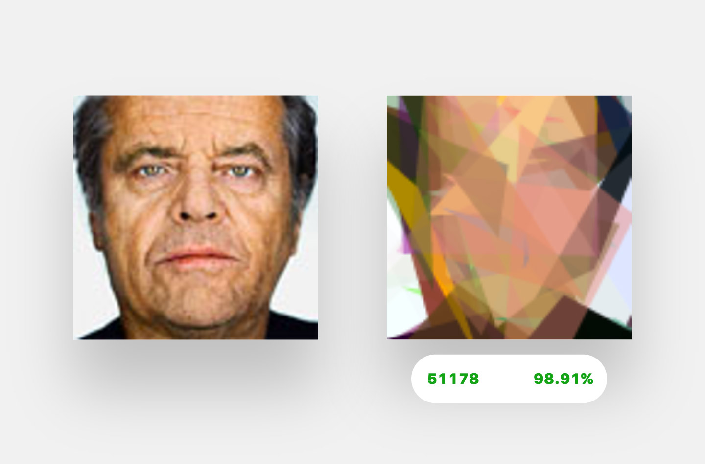

@r00k and @ehmorris learn Elm in Santa Barbara
This Codecation had a lot of dodging and weaving. It took a few solid days to figure out what we wanted to work on. Here's the path we took.
First, a product idea: what if you could learn a bunch about your customers without surveying them?
We took a collection of FormKeep customer emails and fed them into Clearbit's data enrichment service.
We then imported that output into Google Sheets to use its "explore" feature, which automatically generates interesting graphs about your data. Turns out, there were some interesting things in there! Stuff like most common industries served, average customer size, etc.
We made a landing page for a potential product that would do this automatically for non-technical types. We got a few initial emails, but in the end, neither of us were really excited about the project, so we ditched it and turned our attention to a lovely little language called Elm.
For our first task, we decided to create a multi-browser version of Pong. We started with this already-written single-player version. Our goal was to use WebSockets to send the paddle information between browsers. We did indeed get a simple version working, but quickly realized our implementation (keeping states on both clients and trying to keep them in sync) was inherently flawed. The next logical step would have been to move logic and state to the server, but we wanted to keep learning Elm (client-side only), so we switched projects once again.
Finally, we found the project that we'd spend the rest of our trip on.
Inspired by this excellent JavaScript implementation, we decided to build an Elm version.
This proved to be tougher than we first imagined (duh). Some particularly thorny bits were handling the randomization and making sure the UI actually updated while we were in our computation loop.
You can see how we handled these issues in the source code, but be warned that you're looking at how two relative newcomers solved these issues.
What you're seeing is a collection of 125 randomly-generated polygons. With every iteration, we mutate some of them at random and see if our mutant is more similar to the goal image than previously. If so, we save that mutation and mutate it. If not, we just try again from our previous best.
(Note: this demo currently only works on retina screens due to a frustrating bug around pixel densities. If you're seeing only green on the right, that's the issue.)
Frustrated by the difficulty of using randomness in Elm, and the difficulty of creating memory-only canvas elements, we tried re-writing our solution in ClojureScript. This is actually still in WIP status. While ClojureScript was delightfully permissive in letting us interop with JavaScript directly, we deeply missed the strong typing and quality error messages from Elm. Before finishing, we decided to return to our Elm implementation for some final improvements.